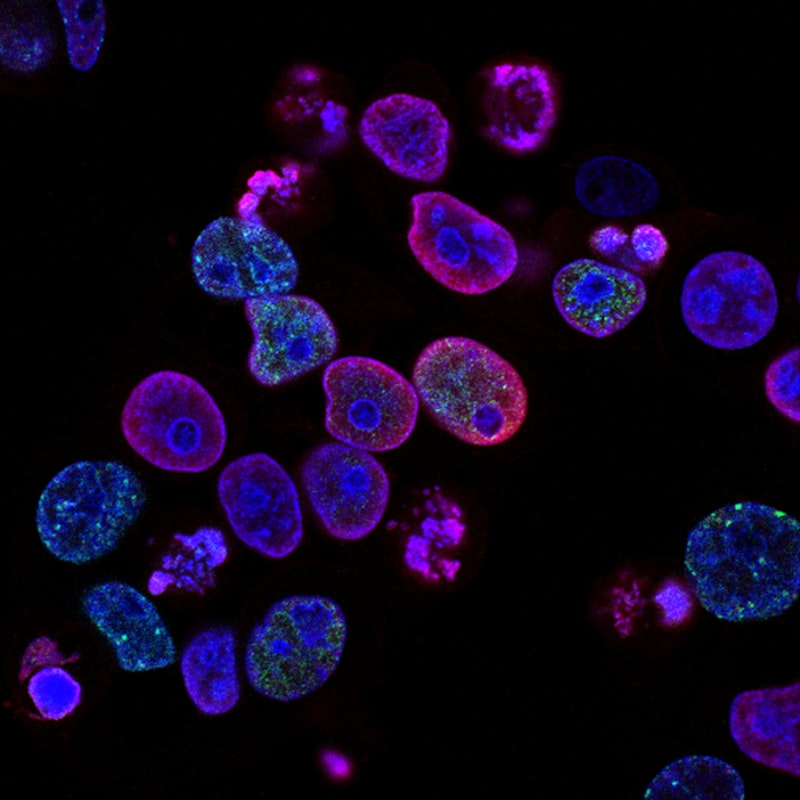

 SCIENCE
DÉCOUVERTE ARTÉMISININE
Révolution du traitement de la malaria par l'extraction de l'artémisinine de la médecine traditionnelle chinoise. Des millions de vies sauvées.
LIRE →SCIENTIFIQUE • PRIX NOBEL 2015

Pharmacologue chinoise née le 30 décembre 1930, Tu Youyou a révolutionné le traitement de la malaria en découvrant l'artémisinine à partir de la médecine traditionnelle chinoise.
Tu Youyou, pharmacologue chinoise née en 1930, a révolutionné le traitement de la malaria en découvrant l'artémisinine. Inspirée par la médecine traditionnelle chinoise, elle a extrait cette molécule de l'armoise annuelle (Artemisia annua), sauvant ainsi des millions de vies. En 2015, elle devient la première scientifique chinoise à recevoir le Prix Nobel de physiologie ou médecine, brisant les barrières de l'effet Matilda qui invisibilise les femmes en sciences.
EXPLORER
Révolution du traitement de la malaria par l'extraction de l'artémisinine de la médecine traditionnelle chinoise. Des millions de vies sauvées.
LIRE →Phénomène d'invisibilisation des femmes scientifiques à travers l'histoire. Comment Tu Youyou a brisé ces barrières.
LIRE → PRIX
PRIXConsécration internationale de Tu Youyou, première scientifique chinoise à recevoir le Prix Nobel de médecine.
LIRE →Millions de vies sauvées : impact concret de la découverte dans la lutte contre la malaria à travers le monde.
LIRE → HÉRITAGE
HÉRITAGEInspiration d'une génération : influence continue sur la recherche médicale et inspiration pour jeunes scientifiques.
LIRE →Explorez en détail la vie et l'œuvre révolutionnaire de Tu Youyou, son combat contre la malaria et son impact mondial.
PARCOURS COMPLET →